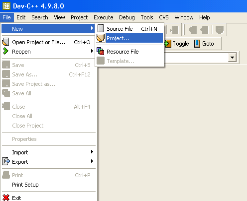
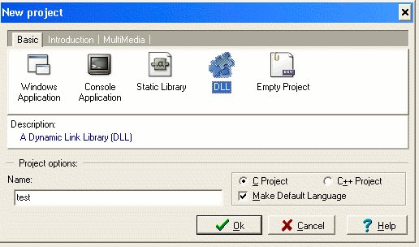
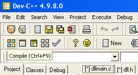

Author: Josh Shireman
Date: October 14, 2004This tutorials will target people with some experience with C who want to play arount with DLL's with REBOL. I will be discussing DLL creation using Dev-C++, so if you use something else, you can write a tutorial for it. Other than that, this document focuses on a quick start to DLL usage in REBOL.
The first step is to download Dev-C++ from
Proceed with a basic installation and there you go.
First go to the File -> New -> Project.

A box will pop up onscreen with five project types and options for C or C++. Select DLL and "C project". Type "test" as the project name. Click Ok.

When the file requestor pops up, create a directory "test" and save the test.dev project inside. Dev-C++ will automatically create for you two files: dllmain.c and dll.h . These files will make up your first DLL.

Press the Compile button. You now have a DLL named "test.dll". Yes, it was that easy. Now, for the fun part! Lets play around with it in rebol!
REBOL needs a /PRO key in order to use DLL's.
Make sure the script is in the correct directory. Loading a library is very simple. Just use load/library .
change-directory %/j/dev-cpp/test/
test-dll: load/library %test.dllNow we can access the functions within the dll.
Rebol uses routines to access the DLL. Take a look at the C code from dllmain.c:
DLLIMPORT void HelloWorld ()
{
MessageBox (0, "Hello World from DLL!\n", "Hi", MB_ICONINFORMATION);
}We need to three things about a function to use it in REBOL: name, arguments, and return value. So, the function name is "HelloWorld". We will use this to call it from the library. Here is the code:
hw: make routine! [] test-dll "HelloWorld"
Since HelloWorld takes no arguments nor returns a value, the block is left empty. Now, when you call hw, REBOL will run HelloWorld from the DLL. Good, it is time to use it. Type the name:
hw
And you will get a pop up box!
Now, we will discuss handling arguments and return values. In the file dllmain.c , add this function:
DLLIMPORT int Square (int x)
{
return x * x;
}Now recompile, and your DLL includes this function.
Next, when we define the routine! for this C function, we need to set the arguments and return for the function. The argument for Square is of C type int, which is an integer! in REBOL. Since the return value is the int x * x also, it will return an integer!. The routine! will be:
square: make routine! [
x [integer!]
return: [integer!]
] test-dll "Square"You can now square numbers until you are content.
For simple functions such as these, I do not recommend using a DLL because overhead will be very high. Here is a simple benchmark:
change-dir %/j/dev-cpp/test/
b: load/library %test.dll
square: make routine! [
x [integer!]
return: [integer!]
] b "Square"
sq: func [
x [integer!]
] [x * x]
a: now/time/precise
repeat i 100000 [square 5]
b: (now/time/precise - a)
a: now/time/precise
repeat i 100000 [sq 5]
c: (now/time/precise - a)
print ["Library Square Function: " b]
print ["Rebol Square Function: " c] And the results of the benchmark follow. As you can see, the native REBOL code is approximately 8 times faster than using the DLL.
Library Square Function: 0:00:00.581
Rebol Square Function: 0:00:00.07Okay, now that we have seen some simple examples, I will discuss more general DLL creation/access
As far as I know, you create C code for DLL's in the same way you write any functions in C. Just include them similarly to the way the above examples were included. NOTE: At the present step in the tutorial, the dll.h header file does not include anything necessary for compilation.
For routine! declaration, there are many types in C that have similar types in REBOL:
Document formatter copyright Robert M. Münch. All Rights Reserved.
XHTML 1.0 Transitional formatted with Make-Doc-Pro Version:1.0.8 on 14-Oct-2004 at 14:43:57